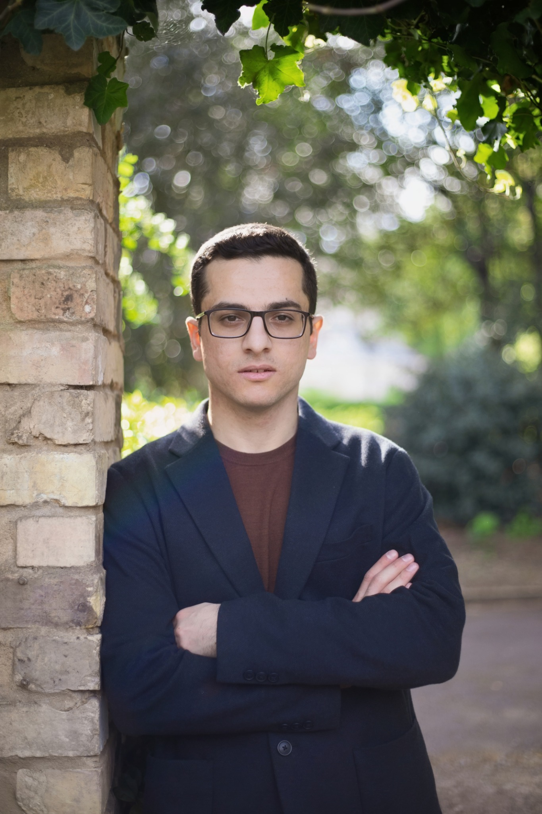

Biography

Armenian pianist Razmik Melkonian is a graduate of the Royal Academy of Music, where he completed a Master of Arts in Piano and received the Brenda Webb Award for Piano Accompaniment in 2022. During his studies, he was supported by the Manoukian Scholarship and the AGBU Performing Arts Scholarship.
He has worked with distinguished pianists including Diana Ketler, Colin Stone, Mei-Ting Sun, Florian Mitrea and Jan Loeffler, and has participated in masterclasses with Andreas Frölich, Ian Fountain and Tatiana Sarkissova, among others.
Razmik has curated and performed in a variety of musical projects across London, including a lunchtime piano recital at St George’s Hanover Square, the Music from Armenia chamber music concert, and numerous song recitals and collaborative projects with singers.
As a répétiteur, he worked on opera productions at the Royal Birmingham Conservatoire, where he completed the Advanced Professional Diploma in Repetiteur Studies. His credits include Offenbach’s Orpheus in the Underworld and Sondheim’s Into the Woods, working with conductors Paul Wingfield, Mark Austin and Anthony Kraus.
Razmik began his musical studies at Yerevan Komitas State Conservatory, receiving training in piano performance, accompaniment and chamber music. Alongside his studies, he worked as an accompanist and piano teacher.